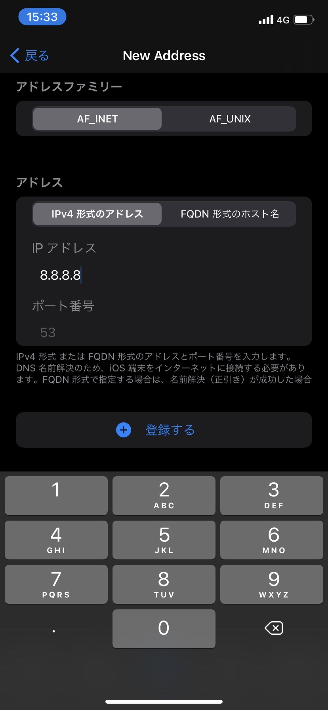
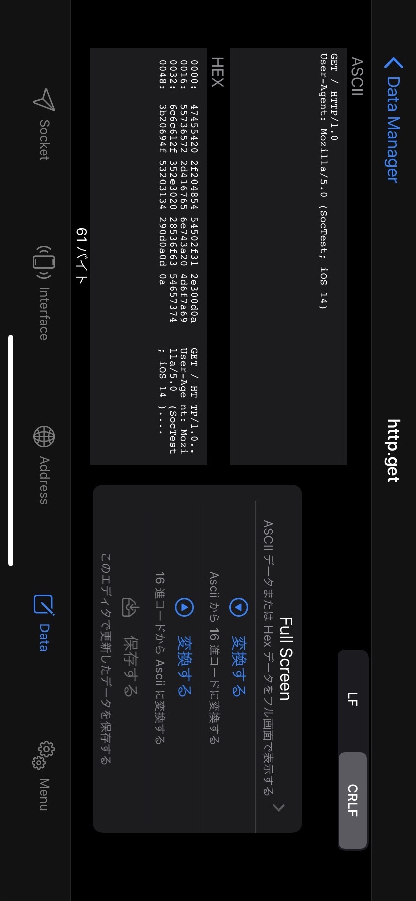
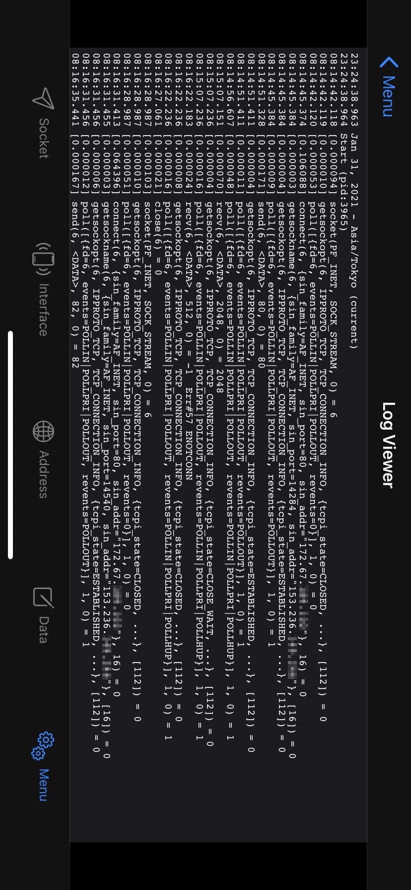
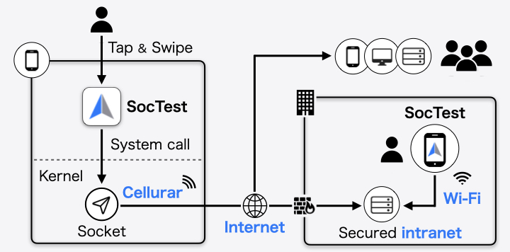

SocTest
POSIX Socket API を Tap & Swipe で自由自在に操れます。



説明を隠す
SocTest は、カーネルに対してシステムコールを発行し、インターネットや組織内のイントラネット上の様々なサーバーとソケット通信を行うモバイルアプリです。

SocTest のネットワーク操作は POSIX C API で実装されています。
高度に抽象化された API を挟まず、必要以上にエラー判定せず、可能なかぎりカーネルに処理を委ねるように設計されています。
それにより低水準かつ高自由度なソケット通信を実現し、トラブルシューティングや疎通テストにおいて主要なネットワークテストツールを補完できます。

SocTest を通して、あなたはネットワーク技術の基礎となるソケットの挙動をイメージできるようになるでしょう。
テストツールとして利用するだけではなく、ネットワークの理解を深める学習ツールとして利用してもらえれば幸いです。


Apple、Appleのロゴは、米国およびその他の国で登録されたApple Inc.の商標です。